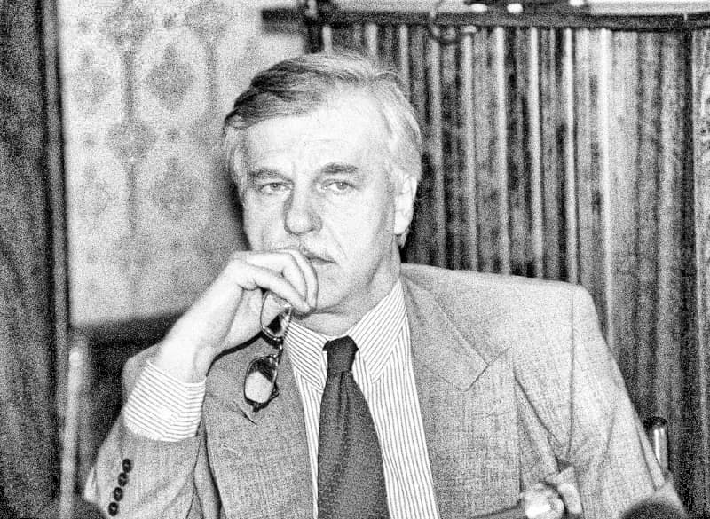
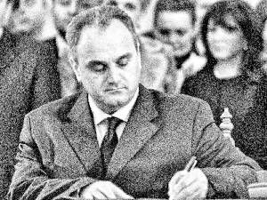
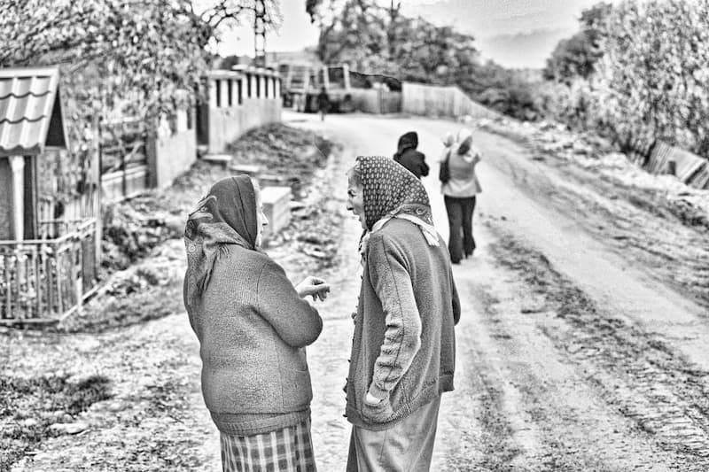

O listă cu pasagerii avionului prezidențial polonez care s-a prăbușit sâmbătă în Rusia a fost publicată de Comitetul polonez pentru memoria națională, care s-a ocupat de organizarea vizitei la Katin. O copie a fost obținută de site-ul Novinite.com, care prezintă principalii oficiali ai delegației.
Lech Kaczynski - președintele Poloniei
Maria Kaczynska - soția președintelui Lech Kaczynski.
Ryszard Kaczorowski - în perioada 1989-1990 a fost ultimul președinte al Poloniei în exil.
Jerzy Szmajdzinski - vicepreședintele Camerei inferioare a Parlamentului polonez, candidat la alegerile prezidențiale din 2010.
Wladyslaw Stasiak - directorul biroului de presă al Președinției.
Aleksander Szczyglo - președintele Biroului Național de Securitate.
Pawel Wypych - secretar de stat al Cancelariei prezidențiale.
Mariusz Handzlik - subsecretar al administrației prezidențiale.
Andrzej Kremer - ministru adjunct al Afacerilor Externe.
Franciszek Gagor - șeful Statului Major al armatei poloneze.
Andrzej Przewoznik - vicepreședinte și secretarul Comisiei pentru comemorarea victimelor masacrului de la Katin a premierului în perioada 1994-1998.
Grzeogrz Dolniak - membru al Camerei inferioare a Parlamentului.
Przemyslaw Gosiewski - membru al Camerei inferioare a Parlamentului.
Zbigniew Wassermann - membru al Camerei inferioare a Parlamentului.
Janusz Kochanowski - avocatul polonez al poporului.
Slawomir Skrzypek - guvernatorul Băncii Centrale a Poloniei.
Janusz Kurtyka - președintele Institutului Polonez pentru Memoria Națională.
Tadeusz Ploski - preot romano-catolic.
Guvernul polonez și Banca Națională a Poloniei, de curând au căzut de acord să slăbească moneda Poloniei, zlotul, ce în ultimele săptămâni își revenise aproape de puterea pre-criză, ceea ce era văzut ca o posibilă amenințare la redresarea economică.
Apoi, a doua zi, președintele Poloniei și președintele băncii naționale mor într-un accident de avion.
Mișcarea cu zlotul arătase că cei ce conduceau Polonia puneau interesele poporului înaintea intereselor Uniunii Europene, în condițiile în care deja era singura țară din UE care nu intrase anul trecut în recesiune.
Mai mult, Banca centrală a Poloniei anunțase în martie că Varșovia nu mai are nevoie de prelungirea liniei de credit flexibile de 21,8 miliarde dolari, pusă la dispoziție anul trecut de către Fondul Monetar Internațional (FMI),
Să ne mai amintim și că Polonia a refuzat să achiziționeze vaccinuri împotriva AH1N1 deoarece companiile farmaceutice NU DOREAU SĂ-ȘI ASUME RESPONSABILITATEA pentru efectele secundare.
Sau chiar că președintele polonez Lech Kaczynski a semnat Tratatul de la Lisabona foarte târziu, de abia la sfârșitul anului trecut…
Cu alte cuvinte, Polonia se deplasa ușor altfel decât bătea vântul și asta desigur deranja. Trebuie înțeles că niște unii au decis de exemplu ca planeta să fie în criză iar cine nu e în criză perturbă. De asemenea, aceeiași au hotărât că FMI trebuie să aibă un rol important (să ne amintim că de curând foști și actuali șefi FMI spuneau pe față că: „Această fereastră favorabilă, plină de oportunități este aici. Nu va sta deschisă pentru totdeauna” și doreau MONEDA INTERNAȚIONALĂ) și se vede urât ca cineva să-i refuze „ajutorul”…
Nu mă lansez cu ipoteza că accidentul aviatic a fost de fapt o eliminare, însă consider că este un moment oportun ca prin dibăcie, ELITELE să repună Polonia pe făgașul „corect”.
Interesant este că în articolul în limba rusă Грузинская телекомпания Имеди „похоронила” президента Польши se putea citi:
Compania privată de televiziune „Imedi”, în reportajul său răufăcător despre „agresiunea rusă” a raportat deasemenea despre „moartea” președintelui polonez Lech Kaczynski. După cum transmite postul de televiziune polonez TVN24 cu referire la conducătorul diasporei georgiene în Polonia, David Gamtsemlidze, într-un film de jumătate de oră de sâmbătă, în care se povestea despre „atacul rusesc asupra Georgiei” și despre „moartea președintelui Mihail Saakașvili”, se spunea și despre aceea că, în urma exploziei avionului, a fost ucis și Lech Kaczynski. Potrivit postului de televiziune, a explodat avionul în care el ar fi zburat în ajutor Georgiei.
„Aceasta a provocat o panică nespus de mare. Mulți oameni au început să aibă probleme cu inima.” - a spus despre efectul filmului, David Gamtsemlidze. Postul de televiziune polonez nu exclude faptul că în spatele de pregătire a filmului sunt autoritățile georgiene. În luna mai, vor avea loc primele alegeri ale autorităților autonomiei locale de după războiul din august. Rezultatul lor, după spusele sursei, va fi răspunsul la întrebarea: în cine au încredere cetățenii, și cine se face responsabil pentru consecințele tragice ale războiului cu Rusia în 2008. „Jurnaliști din “Imedi”, se pare că, au vrut să avertizeze că rușii vor să escaladeze tensiune în legătură cu alegerile, iar o parte a opoziției face apel Rusiei pentru ajutor,” – a spus un expert al Centrului de Studii pentru Est din Varșovia, Krzysztof Strachota.
Saccsiv înainte de toate aș vrea să-ți spun că în urma cu 1-2 luni tot acest canal „Imedi”, a arătat o știre precum că trupele ruse ar fi invadat Georgia și că președintele Mihail Saakașvili ar fi omorât; efectul a fost groaznic: mulți oameni intrând în panică, au început să aibă probleme cardiace, au fost multe cazuri de infarct. Au fost folosite imagini reale, însă de la 8 august 2008. Rușii spun că în spatele acestei noutăți a fost președintele Saakașvili. Eu personal sunt sigur că el a făcut-o, însă nu știu ce urmărește prin asta, probabil pregătește lumea, probabil experimentează. Cine știe?
Consider util de observat în continuare care va fi evoluția unui influent personaj din viața politică și economică poloneză:

Este vorba despre Andrzej Olechowski, ce se pare că va candida pentru funcția de președinte.
Născut în 1947, fost ministru de externe și al finanțelor, este membru în Comisia Trilaterală, ce a fost creată în 1973 la inițiativa lui David Rockefeller. Alți membri fondatori au fost Alan Greenspan și Paul Volcker, ambii foști capi ai Federal Reserve. De asemenea și Zbigniew Brzezinski, care a fost și director.
De asemenea este membru European Council on Foreign Relations (ECFR), organizație finanțată de către George Soros. Despre acest ultim personaj, citiți vă rog și:
A fost economist la BANCA MONDIALA și în board-ul Goldman Sachs.
Participant întruniri Bilderberg Group (2003). Sub impulsul lui David Rockefeller, Grupul se întrunește pentru prima dată la Hotel de Bilderberg, de unde și denumirea, lângă Arnhem, între 29 și 31 mai 1954.
Și o știre tulburătoare din România. Conform articolului Guvernul dă 500 mil. euro pentru programul „umbra electronică“. Ce va ști statul despre fiecare dintre noi din ziarul Gândul, în 2011, fiecare cetățean va plăti pe internet, cu o semnătură electronică, toate dările către stat. Cu un click, statul va urmări toate tranzacțiile și actele online ale cetățeanului
Românilor li se pregătește ceva cu ajutorul faimosului serviciu eRomânia: autoritățile vor ca, până la sfârșitul anului 2011, toți cetățenii să aibă o „umbră electronică”. Așa numita semnătură electronică se va obține, contra cost, benevol anul acesta și obligatoriu la anul, prin completarea datelor din buletin. Ea va avea o dublă menire: 1. oficial va ajuta cetățenii și companiile să-și plătească ușor dările către stat; 2. va ajuta statul să-și monitorizeze cetățenii - practic, orice demers personal, care va presupune interacțiunea directă sau indirectă cu orice oficialitate sau chiar și cu alte persoane fizice ori juridice va fi consemnat electronic și va putea fi consultat de cei abilitați. Aici intră multe, de la înmatricularea mașinii până la simpla comandă prin internet a unui buchet de flori.
Oficialitățile care vor avea acces la datele personale ale cetățenilor vor fi grupate pe 7 nivele de securitate (grade de acces la datele din „umbrele electronice”), spune Gabriel Sandu, ministrul Comunicațiilor, pentru Gândul. Reprezentanții Ministerului de Interne se vor afla în nivelul de top, împreună cu cei ai ANAF, urmați de Ministerul Muncii, Sănătății, Învățământului.
Până cel târziu la 30 septembrie 2010, adică în mai puțin de o jumătate de an, Sandu susține că cele 632.000 de firme active din România nu vor mai avea de completat decât un singur formular și acela în format electronic, pentru plata tuturor taxelor și impozitelor. În prezent, firmele completează 44 de formulare diferite. Serviciul de plată electronică a taxelor și impozitelor va fi disponibil și pentru persoanele fizice, în măsura în care acestea vor dori să-și achiziționeze o semnătură electronică înainte de termenul limită, stabilit pentru sfârșitul anului 2011.
„Va exista o perioadă de acomodare cu acest serviciu, dar hotărârea mea de nezdruncinat este ca plata la ghișeu să dispară, cu totul, până la sfârșitul anului viitor. Până atunci, toți cetățenii vor fi obligați să își obțină și să își utilizeze semnăturile electronice”, ne-a declarat ministrul Comunicațiilor.
Suma cerută, în prezent, pentru o semnătură electronică este de 50 de euro, dar ministrul Sandu și-a propus să o reducă de 10 ori….
„Am discutat cu firmele care asigură aceste certificate și sper să înțeleagă că au o piață de 632.000 de firme, și de peste 18 milioane de persoane care vor avea nevoie de ele. De aceea, eu cred că un cost realist nu poate depăși 5 euro. Poate fi 3 euro, poate fi 7, dar în niciun caz 50 de euro. N-am cum să oblig un țăran, de pildă, să dea banii ăștia pe o semnătură electronică”.
Utilizarea semnăturii electronice în scopul plății taxelor, impozitelor, autorizațiilor, facturilor, se va putea face personal (gratuit) sau asistat. „Va exista în fiecare oficiu poștal din țară un operator specializat în procesarea semnăturilor electronice. Contra unui cost infim, acesta îi va putea asista pe cei care nu au acces la o conexiune broadband (de bandă largă / de mare viteză - n. a.) sau, pur și simplu, nu știu să utilizeze un calculator”, spune Gabriel Sandu. Ministrul Comunicațiilor precizează că va invita și alte firme să presteze acest serviciu (al intermedierii plăților electronice) pentru populație.
Înmatricularea mașinii, comanda unui buchet de flori - cu semnătură electronică.
Utilizarea semnăturii electronice nu se va limita, însă, la plata electronică a dărilor către stat. În câțiva ani, pe măsura dezvoltării serviciului eRomânia la capacitate maximă, practic orice demers oficial va presupune utilizarea semnăturii electronice: „Înscrierea copilului la școală, înmatricularea mașinii, rezervarea biletelor de tren, comanda unui buchet de flori - totul, absolut se va face cu semnătura electronică”, turuie Gabriel Sandu.
„Ca firmă, dacă vrei o autorizație de mediu, de pildă, accesezi aplicația în format electronic, tot pe cale electronică se obțin toate avizele necesare, iar la final, când ți se dă răspunsul, ți se indică suma de plată, contul în care trebuie să virezi banii. Va fi atât de simplu”, adaugă ministrul. Implementarea proiectului eRomânia, al cărui cost global este estimat la 500 de milioane de euro și care își propune interconectarea întregii administrații publice din țară, se va finaliza în termen de cinci ani.
Astfel, din 2015, umbrele electronice ne vor urma pas cu pas și ne vor înregistra toate mișcările din spațiul public. Între beneficiile unui asemenea sistem de monitorizare, Sandu înșiră reducerea cheltuielilor bugetare cu până la 35%, reducerea muncii la negru cu 15%, utilizarea transparentă a banilor publici.

Iată deci încă un pas important spre Big Brother, alături de multe altele. Să ne amintim că:
„Atacul terorist” din Detroit rezolvase o problema: instalarea de SCANERE CORPORALE COMPLETE.
Concernul farmaceutic NOVARTIS va introduce MICROCIPURI în pilule.
În MAREA BRITANIE sunt peste 2,6 milioane de coșuri de gunoi cu… CIP.
Intel dorește să ne implanteze un cip în creier.
În INDIA a început RECENSĂMÂNTUL BIOMETRIC al populației.
VERICHIP FACE PROGRESE: implant cu microcip pentru a corela datele medicale, istoricul creditelor și securitatea socială.
Barack Obama a anunțat oficial crearea CYBERSECURITY CZAR.
DARPA, Microsoft și colosul fabricant de arme Lockheed Martin ne pregătesc NOUL INTERNET.
FBI vrea să fie păstrate evidențele tuturor site-urilor vizitate de către populație.
Un nou „manual” de luptă împotriva terorismului îi indică a fi periculoși inclusiv pe militanții anti NOUA ORDINE MONDIALĂ…
Din 2013, în UE cutia neagră la automobile va pune toți șoferii sub urmărire.

AXA ESTE LOCUL DE UNDE AFLI LUCRURI PE CARE CEILALȚI SE SFIESC SĂ LE CITEASCĂ ȘI SE ÎNGROZESC SĂ LE SPUNĂ: PENTRU EI LUMEA E CU MULT MAI APROAPE ȘI MAI IMPORTANTĂ DECÂT MÂNTUIREA